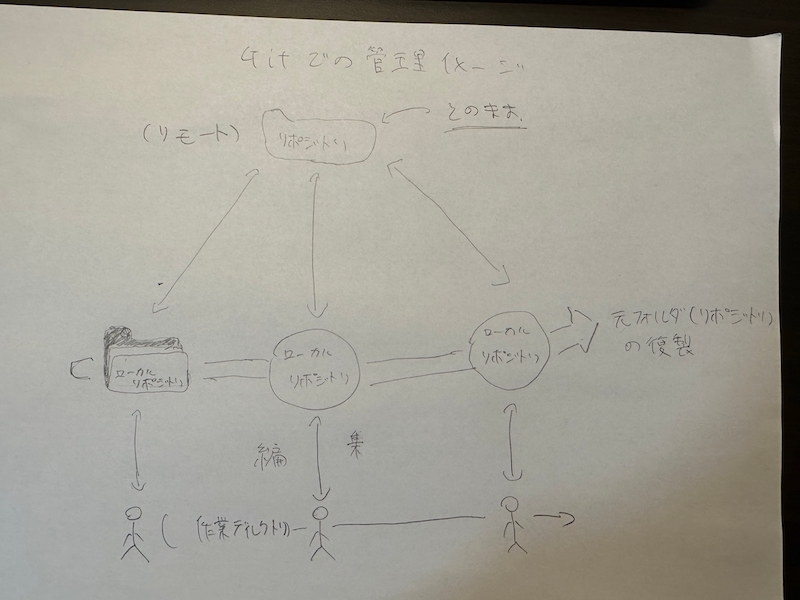

第一回
1.gitに関して
gitは、プログラムのソースコードなどの変更履歴・記録・追跡するための分散型バージョン管理システムである。
「分散型」と言われているとおり、自分のパソコンに全ての変更履歴を含む完全なフォルダの複製を作成できる。
つまり、元フォルダのコピー（ローカルリポジトリ）を手元に置いておけて、自由に編集できるということ。
これにより前もって編集する前にコピーする手間が省け、さらに、チームで作業をしている時に誰が何を変更したのかもわかるようになる。
gitでできること
ファイルの変更管理ができる。
過去のファイルに戻せる
色々管理ができる
チームで共有できる
画像イメージ

参考サイト
samurai engineer（外部サイト）
2,htmlに関して
HTMLとは「ハイパーテキスト・マークアップ・ランゲージ（Hyper Text Markup Language）」の略でwebページを作成するための言語。
タグ（＜？＞）というもので記号を囲みその記号に意味を持たせることができる。
タグにはさまざまな種類があり、主なタグは
body(文章や画像を貼る場所を作る
h１（見出し）
div（文章の塊を作る）
img (画像を貼る）
などがある。
htmlの編集の仕方
vsコードを立ち上げる。
編集したいhtmlファイルをvsコードにドラッグ&ドロップして開く
編集したらGitHubにpushして、更新する。
pushの方法
qiita(外部サイト）
参考サイト
udemyメディア
フォルダの階層構造